Videre · User guide
Raw and encoded sources, color-managed display, scopes, metadata, and the six modes - edit, compare, measure, conform, scenes, and metadata repair: the complete reference for the 1.0 builds.
MP4, MOV, and QuickTime files decode through the system decoder: HEVC, H.264, and ProRes, with frame-exact random access and edit-list handling. Files that carry their parameter sets in-band (hev1 / avc3 sample entries) decode through Videre's own VideoToolbox path, so they open even where the system player refuses them.
A raw YUV or RGB dump carries no header, so Videre asks. The parameter sheet covers:
1920x1080, p010, bt709 and similar tokens in the name pre-fill the sheet and re-rank the guesser.preset:NAME anywhere a raw spec goes. Manage Presets… in the same menu renames and deletes: a rename keeps the saved declaration untouched, refuses a name another preset already uses, and the new name resolves on the command line immediately.Declarations are also remembered per file, so reopening a raw file never asks again; ⌘F re-opens the sheet when the declaration needs changing.
Wrong guess? ⌘F (Reinterpret Raw) re-opens the sheet pre-filled with the active parameters. Applying keeps the frame position, zoom, and any compare session, unless the dimensions change.
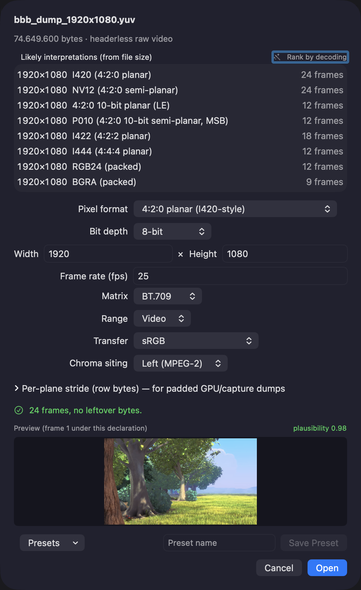
YUV4MPEG2 streams open directly, including 10-bit variants. Header tags map to the interpretation: the colorspace tag sets chroma siting, and COLORRANGE=FULL sets the range.
Everything Videre shows and measures is computed from the pixels through one interpretation: the Matrix (BT.601 / BT.709 / BT.2020), the Range (video / full), and the Transfer (sRGB / gamma 2.2 / gamma 2.4 / PQ / HLG). The info panel (⌘I) holds the three pill controls; changes re-render live.
tagged reset appears in the section header; one click returns to the declaration. For raw files there is no declaration, so the reset returns to what you chose in the parameter sheet.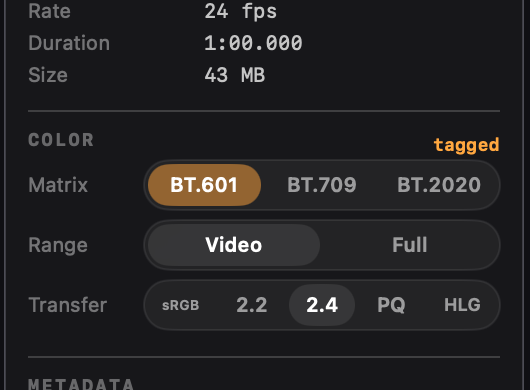
PQ and HLG interpretations render through the display's extended dynamic range. The info panel gains a Display section:
The bottom of the info panel reports what the current screen can do, so you know whether to trust what you're seeing:
×1.0 · not engaged regardless of the brightness slider; flip Transfer to PQ or HLG and the granted value follows the slider (turning brightness up eats headroom; ×1.0 · no headroom means the slider is at max). It updates when you move the window to another display. Where the screen has reference modes, a Reference row shows their pinned headroom and whether the live value currently matches it; matching a reference mode is what makes viewing conditions repeatable. The clipping highlight uses the same live number.via EDR · ×N max or no · SDR only. macOS renders HDR by compositing above the current SDR white (EDR) on any panel with brightness headroom, so this row reports the rendering ceiling, not a panel classification: a 600-nit SDR panel at half brightness legitimately reads ×2.0, while reference-grade HDR panels reach ×8 to ×16. Panel nits are never exposed to apps; absolute values are only pinned in a reference mode (HDR Video: 100-nit SDR white, 1,000-nit peak).settings link opens System Settings › Displays. Reference modes and presets can only be switched there; apps have no API for it.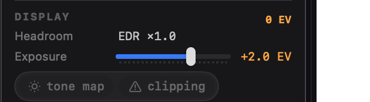
Analyzers stack in the right-hand inspector and toggle from the top-bar capsule, the Display menu, or the keyboard:
| Keys | Scope |
|---|---|
| ⌃1 | Gamut (2D chromaticity / 3D cloud, ICtCp border check) |
| ⌃2 | Levels: per-channel histograms |
| ⌃3 | Waveform monitor |
| ⌃4 | Vectorscope |
| ⌃5 | Light levels (MaxCLL / MaxFALL) |
| ⌃6 | QC checks |
| ⌃7 | Dolby Vision metadata (when present) |
| ⌃8 | HDR10+ metadata (when present) |
| ⌃9 | Bitstream / container inspector |
| ⌃0 | Carriage stress |
⌃⌥ + the same number extracts the analyzer into its own resizable window; press again to close it. A popped-out scope stays live even with its inspector section hidden. ⌥⌘I hides the whole inspector and brings it back with the same scopes open.
Timeline strips. Every time-aligned graph runs as a full-width strip under the viewer rather than inside its panel: light levels, Dolby Vision L1, HDR10+ brightness, QC SI / TI, and the GOP / bitrate chart (section 7). Each strip shares the playhead with the seek bar, dragging it scrubs the viewer, and several strips stack. Panels keep the readouts plus a toggle row for their strip; the on-demand measurements (light levels, QC) open theirs when the pass finishes. A strip closes from its x button or the panel row.
CIE 1931 chromaticity with the frame's pixel density cloud, the active space's gamut triangle, and out-of-gamut / outside-P3 stats. Hover the diagram and matching pixels highlight in the image; hover the image and a marker shows that pixel on the diagram.
The 3D mode plots chromaticity against luminance in nits: a rotatable point cloud with gamut-volume outlines, a Display P3 reference, selectable height scales (linear / log / PQ), and a MaxCLL reference plane. Drag to orbit, scroll to zoom.
The ICtCp border row is covered in section 11.
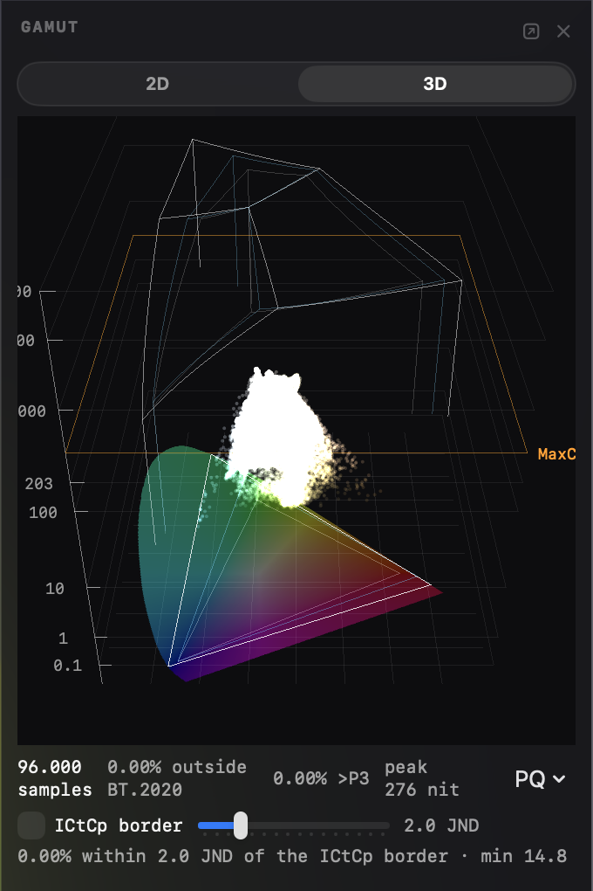
Per-channel histograms with min / max / mean, sub-black and super-white percentages, and a hover bin readout.
Luma and per-channel waveform; chroma vectorscope.
Whole-clip measurements come from one analysis: Analyze (⇧⌘A, the transport-bar button, or a panel's Analyze button) decodes every frame once and fills the light levels, the QC checks, and the Scenes shot list together. Find Scenes in ⌘5 runs the same analysis. When the interpretation changes afterwards, every panel that reads the analysis shows the same notice, and the notice carries its own Analyze again button - one re-run refreshes them all. Opening a different file clears them all.
Analyze new files on open (Settings › Analysis, off by default) runs the analysis as soon as a file opens, so the panels are filled by the time you look. A size guard skips files over a limit you pick, and a running analysis cancels from any of its progress bars.
Measured MaxCLL and MaxFALL over the clip, side by side with the values the file declares. The per-frame nits graph (max and average, with the declared CLL as a dashed rule) opens as a timeline strip when the analysis finishes.
From the same analysis: black frames, freeze runs (mean-absolute-difference based, matching the common detector conventions), letterbox bounds, and ITU-T P.910 SI / TI spatial and temporal information. The per-frame SI / TI graph opens as a timeline strip when the analysis finishes.
File-level delivery checks live in Conform mode's File integrity section (section 10b); the QC panel is the content instrument.
When a file carries Dolby Vision metadata, the scope opens automatically: configuration (profile and level) plus per-frame RPU metadata decoded across CM v2.9 and v4.0, including L1 dynamic levels, trims, active area, source primaries, and target-display blocks. The per-frame L1 graph is a timeline strip, toggled from the panel. Videre inspects the metadata; it does not compose an output image.
ST 2094-40 per-scene metadata with a tone-curve knee readout. The per-frame MaxSCL / average graph is a timeline strip, toggled from the panel.
Header-level parsing of H.264, H.265, and AV1: parameter sets in full, SEI and metadata OBUs (including HDR metadata and per-frame Dolby Vision RPUs), and slice / frame headers, grouped into per-frame access units. The view follows the playhead and shows the current frame's units; JSON export keeps every frame.
chroma suggests chroma_format_idc and friends) and the tree filters to the units carrying it, unfolded to the match. Scope the search to the current frame or the whole stream.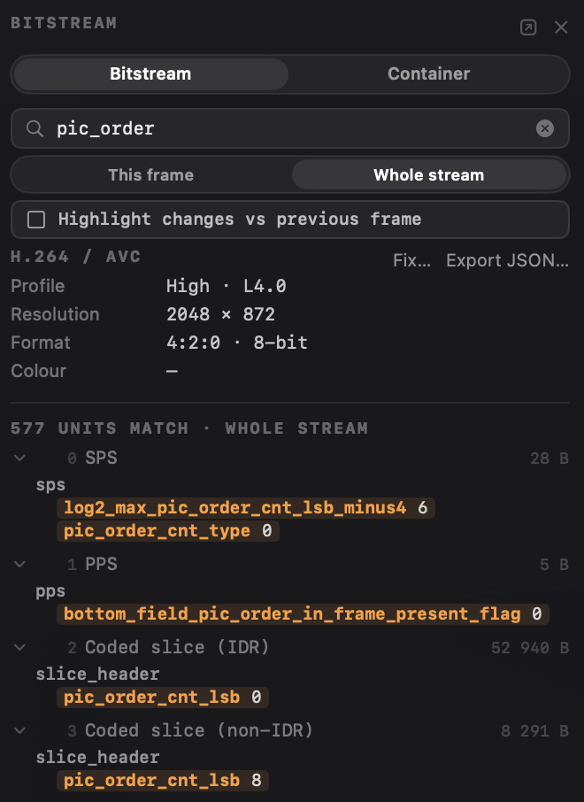
Opening the panel's GOP / bitrate section shows the stats in the panel and runs the frame-size chart as a timeline strip under the viewer (section 6), sharing the playhead: the current-frame marker follows as you step or play, keyframe cadence is visible at a glance, and clicking a bar jumps the viewer to that frame. The stats give the keyframe count, the interval between keyframes (minimum to maximum with the average), per-type frame-size averages, and the stream bitrate (from the declared timing; when a stream declares none, the row says so instead of guessing). Sizes are the stored sample sizes.
The strip carries the same Display / Decode switch as the transport bar (section 4); it is one app-wide setting, not a chart option. In decode order the chart shows the coded structure (reference frames as spikes with their dependent frames following), the playhead marker is the decode position, and a bar click lands exactly; in display order the bars line up with the playback timeline and clicks are exact there too. The switch appears when the stream actually reorders frames. The stats always use the decode-order definitions. This is a header-level view of stream structure; it makes no claims about encoding quality. The same numbers come from videre bitstream file.mp4 --frames as a frames_summary block in the JSON.
For MP4 / MOV / HEIF sources the same scope gains a Container mode: the ISO base media box tree with decoded fields for the movie and track headers, edit lists, sample tables, color boxes (colr, clli, mdcv), codec configuration records, Dolby Vision configuration, HEIF item structure, encryption signalling, and DASH indexes. The file is memory-mapped, so multi-gigabyte files open instantly. The same field search works here.
Entropy-coded slice and tile data is out of scope; that is a decoder's job, and Videre is an inspector.
Metadata mode fixes color and HDR signalling on an MP4/MOV without re-encoding, in both places it lives: the container boxes (the tags a demuxer reads) and the coded stream itself (the signalling a decoder reads, which wins in most players). The everyday save: a deliverable bounced for a wrong or missing color tag, and a re-encode would cost hours and a generation.
Enter with ⌘6 (or ⇧⌘M). The mode pairs with the Bitstream / Container view (⌃9), which opens with it: the view shows what the file says, the mode's toolbar holds the fixes. Files the engine cannot edit - encrypted, HEIF stills, audio-only, or sources with no container at all - say so in the toolbar instead of offering dead controls; raw elementary streams are edited through videre retag on the command line.
Edits stage first and write once. Each staged edit appears in the plan (the count on the toolbar opens the list: delete one, or Revert All), ⌘Z/⇧⌘Z walk every staging, deletion, and revert, and the ⌃9 trees show each staged value inline next to the file's current one with an EDITED badge - current on the left, staged on the right, in every layer the fix writes. The plan keeps one entry per field: staging a color fix twice, or a guided color fix on top of a hand-edited colour_primaries, replaces the earlier entry rather than queueing two answers to one question. Write Metadata Copy… then writes the whole plan to one new, verified file; nothing touches the original at any point, staged or written.
Color signalling lives in two layers, and they can disagree. When they do, the Color row shows both values. Every fix has a scope control: container, bitstream, or both. Both is the default, so the layers always agree after a repair.
The guided fixes (toolbar buttons, each opening its option row - configure the fix, then the row's own Stage button commits it, one undo step per row). Set values open prefilled with what the file declares - the coded stream's own messages first, the container box as fallback - so declaring, say, a corrected MaxCLL starts from the current declaration, not from zero:
master-display string uses; the row shows the derived chromaticities and cd/m² beside them.pasp box and the track's display width are written from the same value as the coded stream's aspect ratio, so players that read either agree.Safety, on every path:
--track flag for multi-track files.In Metadata mode the ⌃9 tree is the selection source: click any field and it loads into the toolbar's field editor with its current value. Fields with self-contained semantics - the color code points, range, chroma siting, aspect ratio, and timing - take a new value and stage it; at write time every copy of the field (in-band parameter sets and the configuration record) is updated together. The level field stages only behind an explicit acknowledgement, because it changes what devices will accept the file. Structural fields (dimensions, profile, parameter-set IDs, anything that shapes how the rest of the stream parses) stay read-only, and selecting one states the specific reason instead of just refusing.
Click a unit's header row and the toolbar offers its message operations: edit the serializable message types (mastering display, content light level, alternative transfer characteristics, ambient viewing environment) prefilled with the decoded values, add a new message, or remove one (HDR10+ or Dolby Vision metadata by provider, or a specific message type). Setting a message replaces every existing copy and lands on every keyframe, so a stream never carries two disagreeing versions.
The Container tree is a selection source too, in three classes. The boxes a guided fix writes - colr, clli, mdcv, pasp, and elst - carry a small tag marker, and clicking one of their fields opens the guided-fix row that writes that box, prefilled from the file (container tags are written whole, so there is no per-field editor for them). Boxes with directly editable fields - mvhd, mdhd, tkhd, ftyp, and the sample-table headers - carry a pencil marker, and clicking a field there loads the container field editor, in two tiers:
-authored), the result line, and the op list (AUTHOR) all say so.Before any field is staged, its byte location is proven against the parser's own reading of the file; a field the editor cannot prove refuses rather than guessing. Everything unmarked is the container's own bookkeeping (offsets, sizes, table contents): the writers recompute it, and clicking such a field says so.
The guided fixes cover what the tree cannot: anything the stream is missing entirely, such as an absent chroma siting, has no row to click, and the guided fix inserts it.
Same engine, plus raw elementary streams (.h264/.h265/.ivf), which the app does not open:
videre retag graded.mov -o graded-fixed.mov --colr bt2020-pq \
--cll 1000,400 \
--master-display "G(13250,34500)B(7500,3000)R(34000,16000)WP(15635,16450)L(10000000,1)"
videre retag master.hevc -o master-fixed.hevc --chromaloc topleft
videre retag hdr.mp4 -o hdr10.mp4 --strip-dynamic-hdr
videre retag odd.mp4 -o fixed.mp4 --edit chroma_sample_loc_type_top_field=2
videre retag inband.mp4 -o compatible.mp4 --make-compatible
videre retag upload.mp4 -o streamable.mp4 --faststart
videre retag remuxed.mp4 -o repaired.mp4 --fix-edit-list
videre retag wrong-lang.mp4 -o fixed.mp4 --box mdhd.language=pol
videre retag good.mp4 -o broken.mp4 --box stsd.entry_count=7 --ack-nonconformingvidere retag --help lists everything: the fix flags (--chromaloc, --sar, --fps, --hlg-compat, --strip-dynamic-hdr, --make-compatible, --faststart, --fix-edit-list), the remove flags, --scope container|bitstream|both, the expert flags (--edit FIELD=VALUE, --remove-sei, --ack-level-change for level changes), the container field edits (--box BOX.FIELD=VALUE, with --ack-nonconforming for the test-authoring fields; the JSON summary carries conformance_asserted so a pipeline can tell a repair from a deliberately broken test file), and --json for a machine-readable summary. The file-level operations and --box each run on their own pass; combining them with other edits is refused. Run them as two passes instead.
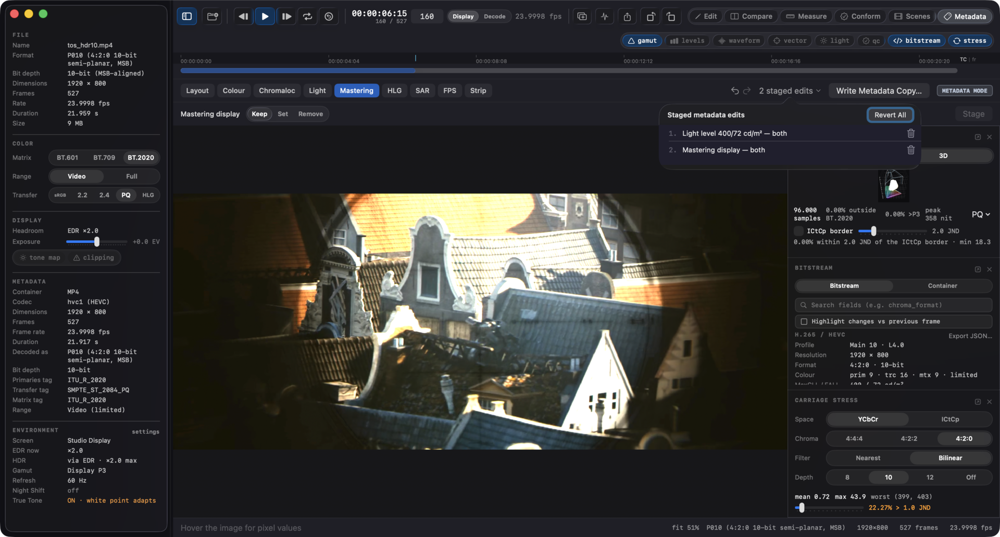
Compare is a mode (⌘2). Open a second file with ⇧⌘O (or drag it onto the compare control) and the app enters it; the compare controls sit in the mode's toolbar under the seek row. Each side converts under its own interpretation, so cross-format and cross-transfer comparisons are well-defined. Switching to another mode keeps the session loaded but inactive; ⌘2 brings it back exactly as it was, and Close Comparison discards it from any mode.
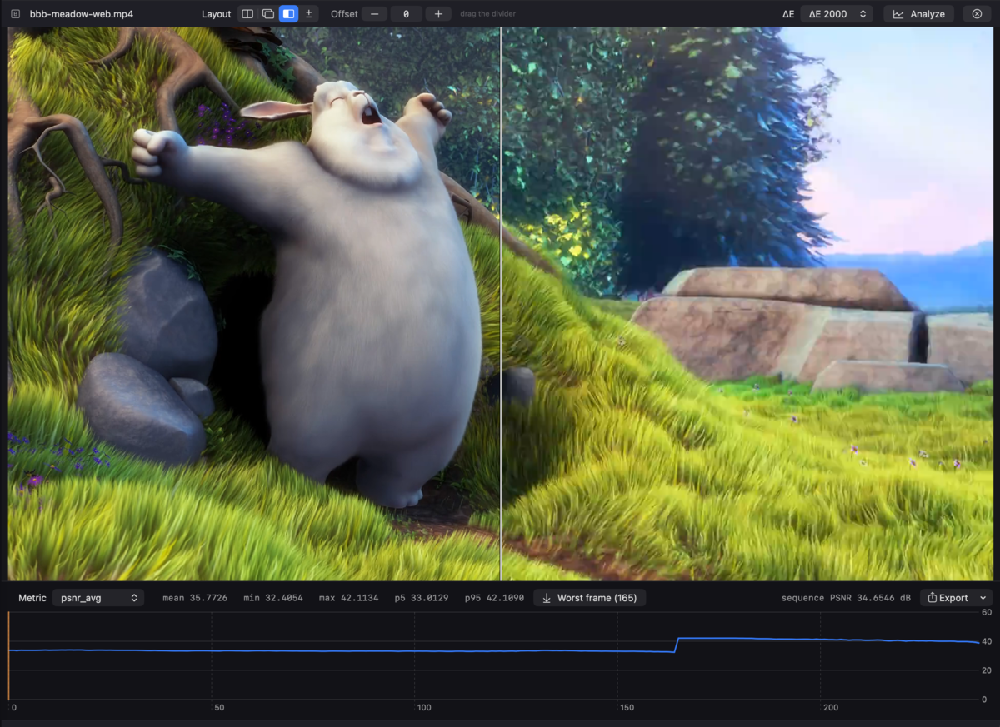
Edit mode (⌘1) is surgical, measurable repair of raw video: a scope finds the defect, an edit fixes exactly that finding, and the same scopes prove the result. It is not a grading tool - every operation writes exact code values, and the original file is never touched.
Edits collect in a stack shown in the toolbar under the seek row. The toolbar's Legalize, Channels, and Patch buttons each open a persistent options row beneath it - set the parameters there and Add to Stack; the row stays open for the next operation. The viewer, the pixel readout, the loupe, and every scope show the frame through the stack, so the Levels panel that flagged super-white reads zero after the legalize that fixed it. Undo (⌘Z) removes the last operation, redo (⇧⌘Z) restores it; nothing is written until you export. Opening a new file starts a fresh stack.
Click the op count in the toolbar for the op list: every operation in order, with its own label ("Legalize luma 16-235, frames 3-9"). Drag a row to reorder, click the trash to delete one, and use the checkbox to disable an operation. A disabled op keeps its place in the stack and changes nothing, which isolates what one operation did to the picture. Disabled ops are saved with the recipe and stay disabled when the command line replays it.
Each row also shows what the op changed on the current frame: samples touched per channel, and the largest code delta. "no change" means exactly that, and it is the useful case as often as not: a legalize over a frame that was already legal writes nothing, and the column is where you see it. An op scoped to other frames reads no change here; step to a frame it covers and the numbers appear. The census is for the frame in front of you, not the clip. For whole-clip totals use videre edit --report.
Reordering re-checks the whole stack. Frame ranges address the timeline as it stands at that point, so moving a cut ahead of an operation scoped to frames the cut removes is refused, naming the operation that no longer fits, rather than quietly editing different frames.
Encoded files (MP4/MOV) open in Edit mode too: the decoded frames are the working material, and export stays raw/y4m - repair here, then hand the frames to the encoder of your choice.
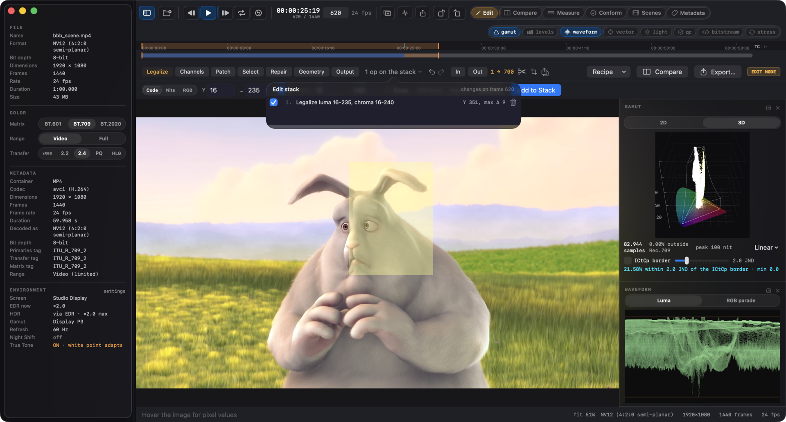
-3 lowers every selected sample by 3 (clamped at the code limits) instead of setting it to a fixed value. Poking Y at one pixel changes exactly one byte of the output.Operations take a scope where it makes sense: this frame, the marked selection, or every frame.
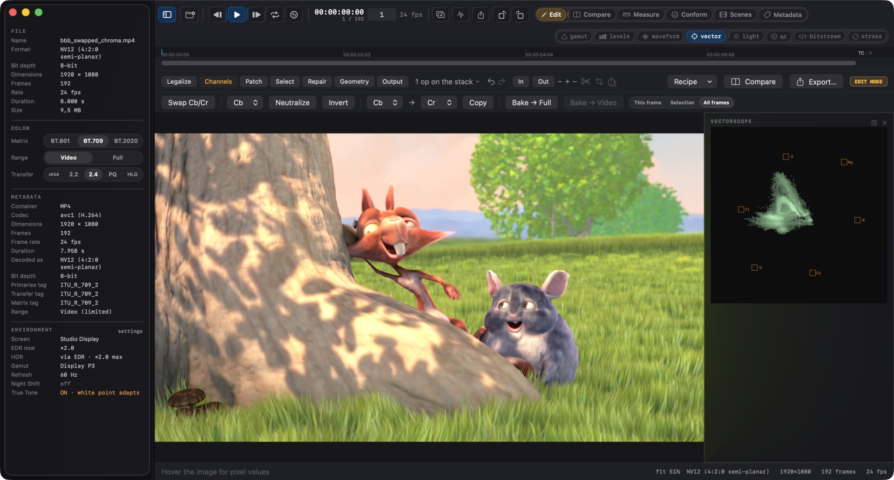
The Geometry row bakes geometry into the stored pixels. Rotation elsewhere in Videre is a display setting; here the samples actually move, so the exported file is the right way up in every player.
These are whole-clip operations. A raw or y4m file has one frame size, so there is no per-frame scope to choose.
On subsampled footage (4:2:0, 4:2:2) the crop origin and the pad offset have to land on the chroma grid. An odd inset is snapped rather than refused, and the readout says snapped to the chroma grid when that happened, so the numbers you typed and the file you get never disagree silently. A 90 degree rotation of 4:2:2 is refused outright: its rotated chroma grid has no representable layout, and the message points at converting to 4:4:4 in the Output row first. Four 90 degree rotations return the original bytes.
Geometry threads through the rest of the stack. An operation added after a crop addresses the cropped frame, and one that pointed at pixels the crop removed is refused, naming the operation, instead of landing somewhere else.
The Repair row interpolates over damage instead of setting codes:
Three rules hold across all of it. A repair reads only unselected samples, so a cluster of dead pixels cannot fill itself with its own damage. A defect touching the frame border uses the neighbours that exist on one side rather than mirroring, because a mirror invents data. And on subsampled footage a chroma sample is interpolated only when every pixel it covers is selected: one dead luma pixel does not license rewriting the chroma its healthy neighbours share.
If there is nothing good left to read from (every row selected, the whole frame selected), the repair is refused rather than leaving the file unchanged and reporting success.
The Select row builds the pixel selection from a measurement instead of the mouse, which is how a scope's finding becomes the edit that fixes it. Pick a criterion, then Count to see how many pixels it covers on the current frame before anything changes, then Select, Add, or Subtract (the same three verbs the mouse has).
A criterion that cannot run on the open file says why rather than selecting nothing: an empty selection would read as "nothing wrong here". The criterion measures the frame as the stack has edited it so far, so selecting out-of-range after a legalize finds what the legalize missed.
The Output row holds two choices that shape everything else.
Work in decides where the operations run. Native keeps the file's own layout: samples you did not edit come out byte-identical, which is what makes the whole mode surgical, but subsampled chroma limits per-pixel color work (an isolated pixel on 4:2:0 shares its chroma with three neighbors). RGB 4:4:4 converts the frame first, so color edits are exact per pixel; the cost is that the conversion touches every pixel, and the byte-identity guarantee goes with it.
Write as decides the file's pixel format, whatever the source was: planar, semi-planar, or RGB, at any supported bit depth, with an optional range change. Chroma is resampled at the file's own siting, and bit depth is scaled by the rule that keeps that range's anchors exact (video range holds 16 and 235; full range holds 0 and maximum). Leave both alone and nothing is converted at all. Packed layouts (YUYV, UYVY, v210) are read but not yet written; the picker says so instead of quietly writing the planar equivalent.
Scale sets the output resolution. It is an output setting, not a stack operation: it applies after everything else, so no operation's pixel coordinates move. Filters:
Keep aspect fits the picture inside the target and pads the remainder with the declared range's black and neutral chroma. With it off you get the exact dimensions, so a stretch is possible but only as the explicit choice. A target equal to the source resolution writes the file untouched: the scaling stage is never entered.
Scaling runs in 4:4:4, after chroma is upsampled and before it is subsampled again. Scaling subsampled chroma directly compounds siting error, and the conversion pipeline already has a 4:4:4 stage for exactly this reason.
The row's right-hand readout always names what the file will be, format and frame size, or says no conversion when the export is the plain surgical path.
Compare (⇧⌘C) bakes the stack to a temporary file and opens it as B against the untouched source, landing in Compare mode with the difference view up: what lights up is exactly what the edit changed, and Run Metrics (⇧⌘R) puts numbers on it. The edit stack survives the trip - ⌘1 returns to it. Available while the edit keeps the frame count (a cut changes the timeline, so the two clips would no longer line up).
Export… (⇧⌘E) bakes the stack to a new file: .y4m (which carries the format tag, rational frame rate, and range), or headerless raw for anything else. Every export is verified before success is reported: the written file is re-read with the same reader that would open it, and every frame is compared byte-for-byte against an independently recomputed reference. Anything off is discarded - and replacing an existing file can never destroy it on a failed export. Sources the y4m container cannot carry directly (NV12/P010-class decoder output, packed 4:2:2) are repacked losslessly to their planar equivalent; code values never change, only the byte arrangement.
Save Recipe writes the stack as a small JSON document; videre edit clip.mp4 --ops recipe.json -o healed.y4m replays it byte-identically from the command line - batch repair across a folder of captures, or a shareable fix attached to a bug report. Load Recipe replaces the current stack. A recipe from a newer version of the app, or one whose ranges don't fit the open file, is refused whole rather than half-applied.
Measure mode (⌘3) reads the part of the frame you point at. The scopes in section 6 read whole frames; this is the complement, and it does not edit anything.
The line and the ruler draw on the image with their endpoints marked and the reading at the midpoint, so the numbers in the toolbar always belong to something you can see.
Copy puts the readout on the clipboard as text or JSON, so a measurement can go straight into a bug report. Esc clears the region, line, or ruler, the same key that clears a selection anywhere else.
Sampling is nearest, never interpolated, and the codes come from the same reader the status strip uses. Measure a whole frame and the numbers match the Levels panel exactly. Positions past the frame edge are dropped from a line profile rather than clamped, because a clamped sample repeats the edge value and would read as real data.
The region tool shares its selection with Edit mode. Measure a suspicious area, press ⌘1, and the selection is already there for the repair.
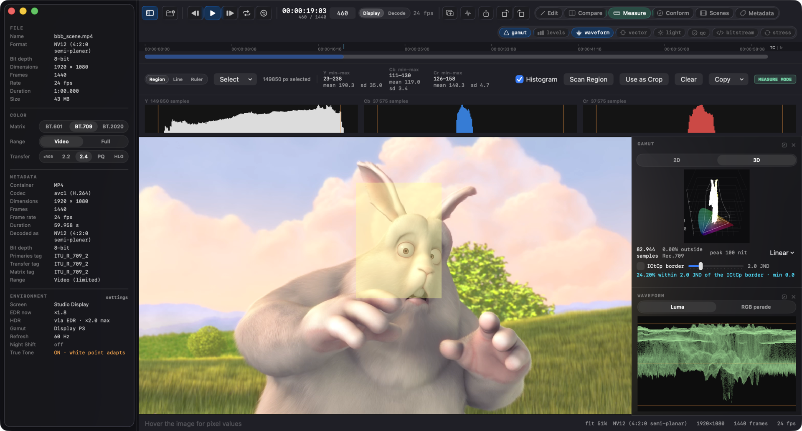
Conform mode (⌘4) turns a delivery spec into a checklist you can act on. Pick the spec; Videre checks the file against it and lists one row per requirement: pixel format, resolution, frame rate, range, matrix, transfer, light levels, legal levels.
Each failing row carries the fix that would resolve it, and the button applies it to the surface that actually performs it:
The table re-checks itself as you work, so a row whose fix changed the model confirms it immediately. Fix All applies everything on offer (already-staged tag fixes are skipped); Export… writes the conformed copy with the usual frame-by-frame verify.
Requirements the spec does not state read SKIP, never a quiet pass, and so do requirements whose measurement has not run: legal levels are judged on the worst frame of the whole clip, so until the clip analysis has run the row skips with an Analyze button inline rather than guessing from one frame. With the analysis in hand, a missing MaxCLL declaration offers its fix directly: the measured values, declared through Metadata mode (⌘6), entered with the light-level fix prefilled - stage it and Write Metadata Copy. Rows Videre cannot fix say so and why: a frame-rate mismatch needs retiming, which changes which frames exist, and a measurement over the spec's limit needs a clamp before a declaration.
Below the spec table, MP4/MOV files get a File integrity section: the same six checks as videre verify (section 12) with the same severities - color agreement between the container and the coded stream, declared against measured light levels, mastering display consistency, chroma siting, edit list sanity, and whether the file opens on the system decoder. These are properties of the file, true whatever spec is picked, so they run once per file when you enter the mode. The light-level row states the interpretation it measured under (the file's own tags); the ⌃5 panel measures under the interpretation you are looking at, and when the two disagree, each says which question it answered.
Presets ship for HDR10 master, Rec.709 SDR deliverable, and a mezzanine profile. Specs you save yourself appear in the same picker; a saved spec cannot take a preset's name, so hdr10 always means the same thing.
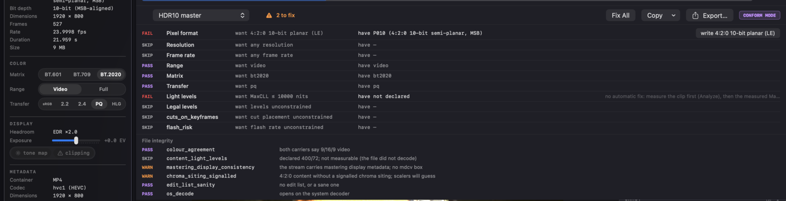
videre conform master.mp4 --spec hdr10
videre conform master.mp4 --spec rec709 --fix -o deliverable.y4mThe check-only form exits nonzero when the file does not meet the spec, so a pipeline can block a bad deliverable before upload (0 conforms, 4 does not, which is distinct from the verification-failed code the writers use). With --fix the offered fixes are applied, the copy is written and verified, and then re-checked against the spec: the report describes the file that came out, not the one that went in.
By default the command decodes the clip once and measures it, so legal levels are judged on the worst frame of the whole file; a clip that is clean on its first frame and illegal afterwards does not pass. --no-measure skips that pass, and the measured rows report skip instead of a verdict. With --fix, the written copy is measured under the same rule.
Scenes mode (⌘5) groups the clip into shots. Find Scenes runs the same whole-clip analysis as Analyze (⇧⌘A), measuring every frame against the one before it in one pass over the file, and the shot list appears underneath: in point, out point, length, how the shot begins, and the difference score at that boundary. Click a row to jump there; ⌥→ and ⌥← step between cuts.
The measurement happens once. Everything to the right of the scan button regroups the same measurements without reading the file again, so you can try a setting and see the answer immediately:
The strip under the viewer draws the per-frame difference with the current threshold across it and a tick at every cut, so a setting that is too high or too low is visible rather than inferred. The same ticks appear on the seek bar.
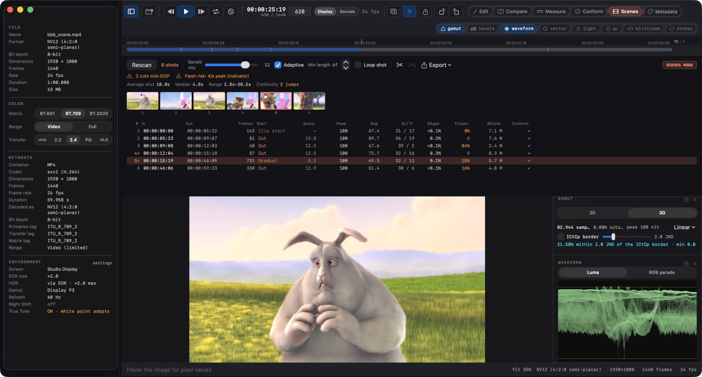
The label describes how the shot begins:
Frames Videre could not measure are counted under the list and are never treated as cuts.
The same pass that finds the cuts measures the frames, so every shot carries its own numbers:
A dash always means "not measured", never "zero".
Once Videre knows where the shots are, it can check two things nothing else on the Mac checks.
Cuts against keyframes. A cut that does not land on a keyframe costs bitrate at the boundary and stops the file segmenting cleanly for HLS and DASH. The badge says how many cuts are mid-GOP, and the tooltip says how many keyframes carry no cut, which is bitrate spent on nothing. Raw and y4m have no keyframes, so the check is skipped with that reason rather than reported as a failure.
Cuts against dynamic metadata. Dolby Vision and HDR10+ are graded per shot. Two things go wrong when the metadata disagrees with the picture: a cut with no metadata refresh carries the previous shot's trim into the new one, and a metadata refresh with no cut is a mid-shot jump in the tone map, which is the effect people describe as the picture breathing. Videre reports both directions, allowing one frame of slop, because authoring tools routinely place the refresh on the frame either side of the cut.
The two formats are not equally knowable, and the tooltip says which you are looking at. Dolby Vision carries a scene-refresh flag in every frame's RPU, so those boundaries are read from the stream. HDR10+ has no scene identifier at all, so Videre infers a boundary from a change in the tone-mapping knee, the target display, or a large step in peak level. Treat the HDR10+ result as a pointer, not a verdict.
Neither check offers a fix. A mid-GOP cut needs a re-encode and a metadata mismatch needs regrading, and neither is something Videre should pretend to do from an inspector.
The same pass measures photosensitivity risk, following the shape broadcast guidance uses (ITU-R BT.1702): a flash is a pair of opposing transitions of at least 20 cd/m² over more than a quarter of the picture, where the darker of the two states is below 160 cd/m², and more than three flashes in any one second is the threshold. Saturated red transitions are counted separately, because deep red provokes a response at levels plain brightness does not. Shots containing a flagged range are marked in the list.
The window slides: four flashes that straddle a second boundary are still four flashes in one second.
SDR carries no absolute light levels, so the check assumes a reference display and the tooltip says which. PQ and HLG are assessed against their own levels.
This is an indicator, not a certified test. The certified Harding test is a licensed product, and the part of the guidance covering regular spatial patterns, stripes and gratings, is not implemented here. A clean result is a reason to keep working, not a clearance.
⌘B puts a cut at the playhead and ⇧⌘B removes the one there, merging that shot into the one before it. The scissors buttons in the toolbar do the same.
Your corrections survive everything else. Change the sensitivity and the cuts you placed stay exactly where they are while the detected ones move around them. A cut you place is never removed by the minimum-length setting, and it never removes a detected cut near it: the two kinds of boundary do not compete. Remove a cut that the detector is not currently finding and nothing happens now, but the removal comes back into effect if you lower the threshold far enough to find it again, so dragging the sensitivity is never quietly destructive.
Manual boundaries are labelled Manual and drawn in a different color from found ones, and the summary row counts them, so a shot list always says which boundaries a person decided. Reset hands the whole thing back to the detector.
A filmstrip of shot heads sits above the list. Click one to jump there. The pictures fill in as they decode, and re-grouping keeps every picture whose shot still starts on the same frame.
Loop shot keeps playback inside whichever shot the playhead is in, which is what you want while judging a single shot's grade or motion.
Right-click a row in the shot list for Keep Only This Shot and Remove This Shot. Both push an operation onto the edit stack and switch to Edit mode, where the usual verified export applies. The range is mapped through the edited timeline rather than the source numbering, so a shot pushed after an earlier trim still removes the frames you pointed at. If an earlier operation already removed everything the shot covered, Videre says so instead of acting on the nearest frames it can find.
Export This Shot… writes that shot on its own without touching the edit stack, so looking at one shot does not change the edit you are building.
Once the cuts are known, Videre can work out which frames should be keyframes for a delivery, and hand that to an encoder.
The reason this is not simply "a keyframe at every cut": a streaming segment has to start with a keyframe, so segment boundaries usually have to fall on a fixed cadence. A segment may contain more keyframes, though, which is why the default mode puts keyframes on the cadence and on every cut. The cuts cost a little bitrate and the segment boundaries stay even, which is what a fixed-duration DASH template needs. The other modes are cadence only, cuts only, and a cadence that shifts onto a nearby cut when there is one in reach, which compresses better but makes segment durations uneven, so it needs a segment timeline instead of a template. Videre tells you which of the two you have produced.
The GOP Plan Report lists the segments and their durations, and names every cut that did not get a keyframe with the reason, which is usually that it sat closer to the previous keyframe than the minimum GOP allows.
Export the plan as an ffmpeg force_key_frames argument (seconds, or the frame expression, which is exact where the seconds form can round at 29.97), an x264 or x265 qpfile, frame numbers, or timecodes.
File › Export… (⌥⌘E) opens the export window. It works for any open file in any mode, and offers two destinations. Every export path in the app lands here: ⇧⌘E, the transport and Edit toolbar buttons, and Export Selection as Subclip are all this window.
Raw / y4m writes the file itself: choose a pixel format, a range and a working space, and Videre converts and verifies every frame against a freshly opened source before replacing anything. Choose a .y4m extension for a header, any other extension for headerless raw. If the edit stack has operations on it, they apply, and the window says how many. A Scope control writes everything or just the Edit selection between the I and O marks; Export Selection as Subclip arrives with Selection pre-picked. The ffmpeg destination always encodes the whole timeline.
ffmpeg hands the job over instead, with the encoder, the settings, the command, and the result.
Use scenes as keyframes forces a keyframe at every detected cut, on top of the cadence. It needs the clip analysis (⇧⌘A, or Find Scenes in ⌘5) and says so when there is not one; with it off the command is a plain cadence encode.
Pick an encoder and the command below it changes. Choose an output, set quality or a bitrate, and the command changes again. Copy takes it, Run runs it.
The command is editable. Type in it and it stops regenerating, so a change you make is never silently overwritten; Reset hands it back. Videre tokenizes what you wrote and runs it directly, never through a shell, so a semicolon in the field is an argument rather than a second command. The one thing it will not do is launch a different binary: use Encoders… → Choose ffmpeg… to change which ffmpeg runs.
After a run, Videre reads the keyframes out of the file it just made and says whether they match the plan. That check is the reason editing is safe to offer: Videre cannot promise a command you rewrote still follows the plan, but it can tell you afterwards whether it did.
Videre does not encode and does not ship an encoder. It looks for an ffmpeg already on your Mac, on your PATH or in the usual Homebrew locations. If there is not one, the command is still yours to copy.
The encoder's own scene detection is turned off in the command, because the whole point is that the plan decides where the keyframes go. Audio is copied rather than re-encoded.
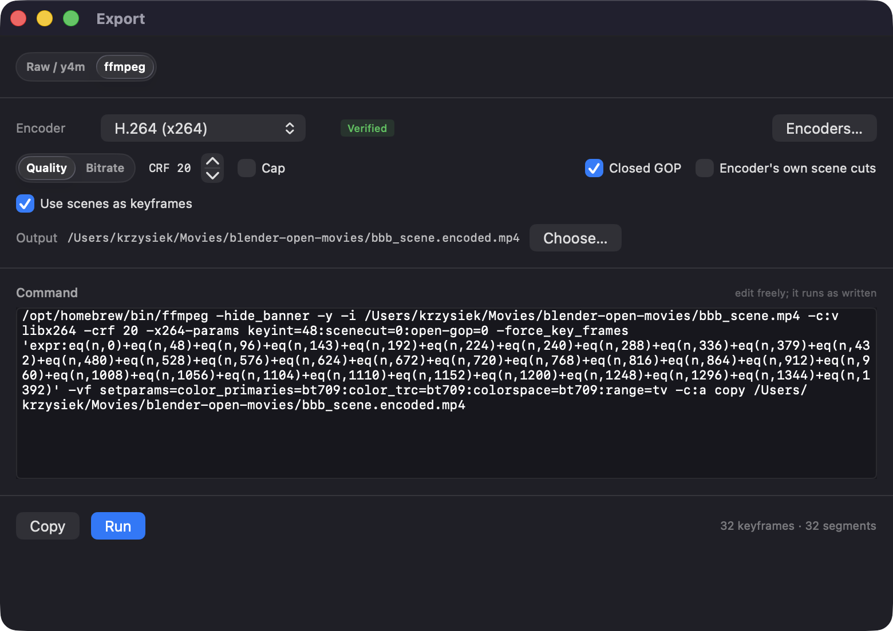
Encoders… in that window lists what your ffmpeg has, and what Videre knows about each one:
Verify on any row encodes a short test clip with a known keyframe plan and reads the result back, so the claim is about your build rather than about Videre's table.
The Export menu writes the shot list as chapters (FFMETADATA, which ffmpeg can mux straight into a file, or WebVTT), as markers (a CSV that Resolve and Premiere import), as YouTube chapters for a description box, or as an OpenTimelineIO timeline with one clip per shot.
Titles say what Videre knows: the shot number and how it begins. It does not invent descriptions of what is in the picture.
Conform mode gains two requirements that need the clip analysis: every cut on a keyframe, and a flash-rate ceiling. Until an analysis has run they report as skipped with an inline Analyze button, never as a pass. Neither offers a fix, for the reasons above.
videre scenes clip.mp4
videre scenes clip.mp4 --threshold 20 --min-length 12 --json
videre scenes clip.mp4 --edl > shots.edl
videre scenes clip.mp4 --markers ffmetadata > chapters.txt
videre scenes clip.mp4 --otio > clip.otio
videre scenes clip.mp4 --keyframes ffmpeg-expr
videre scenes clip.mp4 --gop-plan --segment-seconds 4
videre scenes clip.mp4 --ffmpeg-command out.mp4The same engine as the mode, with --json, --csv, --edl (CMX3600), --otio and --markers outputs. --luma-only scores the luma plane alone, which reproduces ffmpeg's scdet number exactly, including the equal-brightness cuts it cannot see. --drop-frame is honoured at 29.97 and 59.94 and ignored elsewhere, since drop-frame numbering does not exist at other rates.
--keyframes and --gop-plan produce the keyframe plan, controlled by --gop-mode (cadence, cuts, cadence+cuts, snap), --segment-seconds or --keyint, --snap-tolerance, --min-gop and --max-gop. --ffmpeg-command out.mp4 prints the ffmpeg command that would encode with that structure. The command-line tool prints it and stops; running it is your call.
Pick one output at a time: each produces a whole document, so two would mean two file formats in one stream.
The command reports rather than gates, so it never exits nonzero because of what it found: 0 means the report was produced, 2 is a usage error, and 3 means the analysis could not run. Use conform when a pipeline needs to block a file.
Timecode follows the file's frame rate. At 29.97 and 59.94 the Drop-frame switch appears and is on by default, because that is what those deliverables number in; the semicolon before the frames field is what marks it, as SMPTE does. At any other rate drop-frame does not exist and the switch is not offered. On a variable-rate file timecode counts against the declared rate, so it is nominal.
The score is the mean absolute difference between the two frames, scaled so a full-scale change reads 100. Videre measures all three planes by default. This matters: two shots can have the same brightness and completely different color, and a luma-only measurement scores that real cut at zero. The luma-only figure is kept alongside, and it matches ffmpeg's scdet filter exactly, so a disputed result can be checked against the tool most pipelines already run.
ICtCp (ITU-R BT.2100) is the color representation modern HDR pipelines measure in: I carries PQ-coded intensity, Ct the blue-yellow axis, Cp the red-green axis. Only a curved solid inside the I/Ct/Cp box maps back to real RGB; distance to its surface is a color's headroom against further processing. Videre reads that space three ways.
All thresholds are in ΔE ITP units (BT.2124), scaled so 1 equals one just-noticeable difference under critical viewing. Rule of thumb: below 1 nobody sees it, 2 to 3 is noticeable side by side, above 3 is plainly visible, 10+ is gross. Real content in motion tolerates several JND.
These are measurement views computed through the active interpretation; changing Matrix / Range / Transfer changes them.
Flags pixels whose chroma margin to the edge of the representable volume is below a threshold: the colors with no headroom, which chroma subsampling, filtering, or quantization can push out of range (a clipped channel there reads as a hue shift).
0.05% within 2.0 JND of the ICtCp border · min 0.0; min is the worst pixel's margin.Try it: a color in ICtCp
The tinted shape is every Ct/Cp value that is a real color at this pixel's intensity. The dot is the picked color; the dashed circle is its margin, the distance it can drift before it stops being representable. Colors here are treated as SDR signal graded at 100 nits; in the app, the interpretation decides.
Simulates a carriage on the current frame and scores the damage per pixel: convert → quantize → chroma-subsample → upsample → convert back → compare as ΔE ITP against the frame's own interpreted signal.
| Control | Options | Decides |
|---|---|---|
| Space | YCbCr · ICtCp | Carriage color space; YCbCr follows the active matrix |
| Chroma | 4:4:4 · 4:2:2 · 4:2:0 | Chroma resolution; 4:4:4 isolates quantization |
| Filter | Nearest · Bilinear | Sited pick / replicate, or box down + siting-aware bilinear up |
| Depth | 8 · 10 · 12 · Off | Code depth; Off means no quantization |
The heatmap draws each pixel's ΔE ITP on a fixed 0-10 JND scale, in display orientation:
Stats show mean, max, the worst pixel (source coordinates), and a threshold slider that re-bins the percentage without recomputing. Reading it: thin bright seams at color boundaries are subsampling; an even wash on flat areas is quantization.
Try it: what 4:2:0 does to a color boundary
Numbers are the worst-pixel ΔE ITP at the boundary for a BT.709, 10-bit, bilinear carriage. Saturated complementary pairs hurt the most; try two pastels to see the damage collapse below threshold.
Honest limits. This is a carriage preview, not a codec (no DCT, no rate control). The simulation runs on the stored pixel grid; rotation metadata passes through a real re-encode untouched, and the math matches that. A color edge aligned to the chroma block grid reconstructs losslessly, so test charts undersell what real footage shows. Full-range coding clips the most extreme chroma on its own (roughly 0.13 JND on a pure primary). PQ uses the full 10,000-nit container.
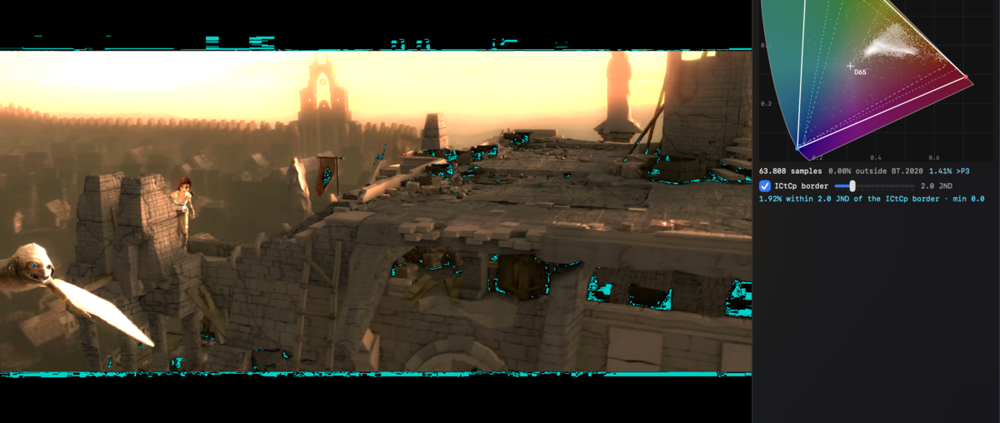
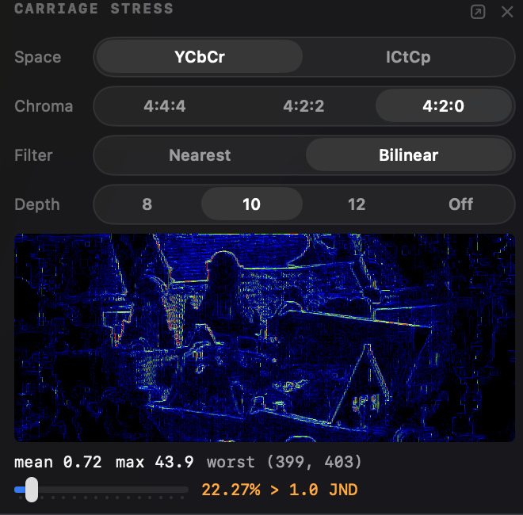
Videre → Install Command-Line Tool… links the bundled videre binary into /usr/local/bin. Nine subcommands on the same engine as the app:
videre inspect file.mp4 # format, interpretation, metadata → JSON
videre compare ref.y4m dist.mp4 # PSNR / SSIM / MS-SSIM / VMAF / ΔE → JSON
videre bitstream file.hevc --frames # parameter sets / SEI / RPUs + GOP stats → JSON
videre container file.mp4 # ISO box tree → JSON
videre retag in.mp4 -o out.mp4 … # repair signalling, verified
videre edit in.mp4 -o out.y4m … # bake an edit recipe, verified
videre verify master.mp4 --strict # delivery checks, exit code for CI
videre conform master.mp4 --spec … # check against a delivery spec, exit code for CI
videre scenes clip.mp4 --json # shots, per-shot stats, keyframe plans, exportsvidere edit replays a recipe saved from Edit mode (--ops recipe.json) or, with no recipe, does a verified passthrough - y4m to raw and back, or an MP4/MOV decoded out to raw frames. Output is raw or y4m only, routed by the output extension. --out-format, --out-range, --chroma-filter, and --working-space are the command line's half of the Output row, so a format conversion scripts the same way it clicks. --report adds the per-operation census over the whole clip (samples touched per channel, largest code delta, one line or one JSON entry per operation in the recipe), which is how a batch run proves which repair did the work; it is opt-in because counting costs a pass over every sample. Exit codes match retag: 0 ok, 1 error, 2 usage, 3 the written file failed verification (and was not kept).
videre verify is the delivery gate: it runs six checks (color agreement between the container and the coded stream, declared against measured MaxCLL/MaxFALL, mastering display consistency across carriers, chroma siting, edit list sanity, system-decoder openability) and exits nonzero when one fails, so a pipeline can block a bad file before upload. Warnings pass by default; --strict fails them, and --fail-on / --warn-on tune single checks. Exit codes: 0 clean, 1 a check failed, 2 usage, 3 the analysis could not run, so a script can tell a bad deliverable from a broken gate. --json gives the same verdicts with the measured numbers included.
Raw inputs take a spec: --raw 1920x1080:i420:video:bt709 on inspect, --raw-a / --raw-b on compare. A preset saved in the app's parameter sheet works anywhere a spec does: --raw-a preset:mezz carries the full declaration, including strides and color.
Reports use a stable, versioned schema, so scripted QC can pin against it.
Shortcuts and Finder reach the same engine as the app and the command line.
Shortcuts (the macOS Shortcuts app) gets three actions:
1920x1080:i420) or preset:NAME. An optional frame number adds per-component min/max/mean statistics.videre verify --strict.Paths are text parameters, so they bind to the clipboard, Ask for Text, or any text variable; plain, tilde, file://, and quoted paths all resolve. The JSON files carry the same versioned schema as the command line (section 12), and untagged SDR files read under the BT.1886 default regardless of the app's Analysis setting, so a Shortcut produces the same numbers on every machine.
Finder Services (right-click a video file › Services):
The entries appear for MP4/MOV/y4m files. Raw files need a declared format, so they go through the app or the command line instead.
| Keys | Action |
|---|---|
| ⌘O / ⇧⌘O | Open / open comparison file |
| ⌘1 … ⌘6 | Edit / Compare / Measure / Conform / Scenes / Metadata mode (press again to leave) |
| ⌘F | Reinterpret raw file |
| ⌘I | Info panel |
| Space | Play / pause |
| ← / → | Step one frame |
| ⌘← / ⌘→ | First / last frame |
| ⌘J | Focus the jump field |
| ⌘L | Loop playback |
| ⌥I / ⌥O / ⌥⌘L | Loop in / out at the playhead / clear the loop range |
| ⌘-drag on the ruler | Paint the loop range (⌘-click clears) |
| ⌥-drag on the ruler | Paint the Edit selection (Edit mode; ⌥⌘-drag paints both) |
| ⌘+ / ⌘− / ⌘0 / ⌥⌘1 | Zoom in / out / fit / actual size |
| M | Loupe |
| V / ⇧V | Next / previous display channel |
| T / C | Tone map to SDR / clipping highlight (HDR) |
| [ / ] / \ | Display exposure −0.5 EV / +0.5 EV / reset (HDR) |
| ⌥⌘I | Show / hide the scopes inspector |
| ⌘R / ⌥⌘R | Rotate clockwise / counterclockwise |
| X | Toggle A/B |
| ⇧⌘A | Analyze the whole clip |
| ⇧⌘R | Run Metrics (compare) |
| ⌥↑ / ⌥↓ / ⌥⌘0 | Nudge / reset the compare offset |
| ⌥⌘E | Export window |
| I / O | Mark selection in / out (Edit mode) |
| ⌫ | Remove selected frames (Edit mode) |
| ⌘Z / ⇧⌘Z | Undo / redo edit op (Edit mode) |
| ⇧⌘C | Compare the edit with the source (Edit mode) |
| ⇧⌘E | Export (opens the export window) |
| click / drag | Pick a pixel or region (Edit mode, Patch row) |
| ⇧-click / ⇧-drag | Add to the pixel selection (Edit mode) |
| ⌥-click / ⌥-drag | Remove from the pixel selection (Edit mode) |
| ⇧-arrows | Extend the pixel selection (Edit mode) |
| ⇧⌥-arrows | Move the pixel selection (Edit mode) |
| ⌥← / ⌥→ | Previous / next cut (Scenes mode) |
| ⌘B / ⇧⌘B | Add / remove a cut at the playhead (Scenes mode) |
| ⇧⌘L | Loop the current shot (Scenes mode) |
| Esc | Clear the selection (any mode: the pixel selection, and a Measure line or ruler) |
| ⌥⌘C / ⇧⌘S | Copy frame / save frame as PNG |
| ⇧⌘M | Metadata mode (alias of ⌘6) |
| ⌃1 … ⌃9, ⌃0 | Toggle analyzers (see section 6) |
| ⌃⌥1 … ⌃⌥9, ⌃⌥0 | Pop analyzer out to its own window |
Videre's numbers are pinned to external references, not to itself: PSNR matches ffmpeg's psnr filter to the printed precision; VMAF and CAMBI are gated against the reference vmaf CLI; Dolby Vision RPU decoding is cross-validated against dovi_tool-generated bitstreams; HDR10+ against hdr10plus_tool; container decoding against GPAC's mp4box and heif-info; bitstream parsing against ffprobe, mediainfo, and known encodes from x264, x265, and SVT-AV1. Color math anchors (BT.601/709/2020, BT.2100 PQ and HLG, BT.2124, CIEDE2000) are pinned to published test values, and the display shader is tested per-pixel against the CPU reference.
Two documented deviations, stated rather than hidden: SSIM follows the canonical Wang 2004 definition, which reads a few 10⁻⁴ from ffmpeg's x264-derived variant; and the HLG display preview applies the system gamma per channel while readout and measurements use the luminance-correct form.